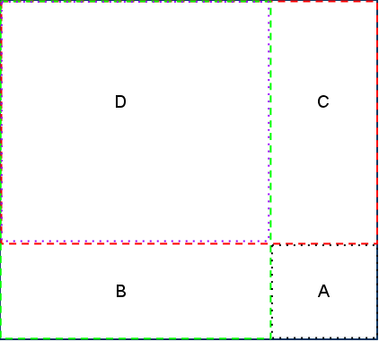

Let us begin by thinking how can we determine the center of mass of a given blade. The simplest formula for the center of mass (obtained by transforming the formula from the problem statement) is: sum(Massi * Pi) / sum(Massi), where Pi is the position of cell i relative to a static location, such as the upper-left corner of the sheet of metal, Massi is the mass of cell i, and i is iterated over all cells in the blade.
The first thing to note about this problem is that the X and Y coordinates of the center of mass can be calculated independently, which will simplify the calculations significantly. The X and Y coordinates of the center of the blade are also easy to calculate (the X coordinate is the average of the smallest and largest X coordinate of any cell in the blade).
The thing we are interested in is whether the center of the blade and the center of mass of the blade coincide. To avoid floating point calculations (which would induce the need to think about possible precision problems) we can multiply the equality sum(Massi * Xi) / sum(Massi) = (minX + maxX) / 2 by the denominators of both sides. Thus, for each blade we need to check the equality 2 * sum(Massi * Xi) = (minX + maxX) * sum(Massi).
So, we simply need to test this equality for all possible blades. This can be done by iterating over all possible X and Y coordinates of the upper-left corner of the blade, and then over all possible sizes of the blade. Calculating either side of the equality above can be performed by iterating over all cells in the blade (remember to omit the corners!). As there are O(RC) possible upper-left corners, O(min(R,C)) possible sizes and O(min(R,C)^2) cells in a blade, the whole algorithm has a time complexity of O(N5) (where N denotes the common upper bound for R and C), which works for the small input, but we cannot expect to make it work for the large.
Before we attack the large case, let us spend a moment to look at potential overflow problems — we already saw that this can be a serious issue in this competition! The left-hand size of the inequality can be estimated by 2 * N2 * N * maxW — two times the number of cells times the largest possible value of Xi times the largest possible weight of a cell. In the small test cases, this value will easily fit into a 32-bit integer, while in the large case we should use 64-bit integers to be safe. We also considered giving a 1018 bound on D, several approaches of dealing with overflow (that can also handle this obscenely large limit) are given at the end of this editorial, you might also want to think about this problem yourself.
Back to the large case. Notice that in the previous approach we have seen there are O(N3) blades to consider, so one approach to reducing the run time is to attempt to make the center of mass calculation for every blade constant. This requires a bit of precalculation.
To precalculate the center of mass (or rather, the sum(Massi * Xi) and sum(Massi) quantities) for any given blade, we will first calculate the center of mass and total mass for all rectangles with the two corners at (0,0) and (x,y). We will start with the rectangle with corners at (0,0) and (1,1). This is just the first cell of the grid, so we already know its center of mass and total mass. We will store this answer and move on to the next rectangle we want to calculate, which will have corners at (0,0) and (1,2). Since we already know the center of mass and total mass for the rectangle with corners (0,0) and (1,1) we can use this rectangle, and the rectangle with corners at (0,1) and (1,2) to calculate the center of mass and total mass for the rectangle with corners (0,0) and (1,2). As long as we iterate over the Y axis 1 by 1 we can calculate the total mass and center of mass of all possible rectangles in constant time.
Now we have to handle the case where we have to iterate the X axis of the corner, so we need to know the center of mass and total mass of the rectangle with corners at (0,0) and (2,1). This is the same as the first case for the Y axis, so we just calculate the center of mass and total mass using the rectangle with corners at (0,0) and (1,1) as well as the rectangle with corners at (1,0) and (2,1). In the next step we run into a problem. We have a grid that looks something like the image below.

If it is not clear in the image, the rectangles marked B and C overlap with the rectangle D.
We know the appropriate sums for the rectangles marked A, B, C, and D, but we need to know the sums for the entire rectangle, which we will call R. This can be done in constant time using:
R = A + B + C - D
We subtract D because it is added twice when we add both B and C.
This can be used to calculate center of mass and total mass both for all rectangles with corners (0,0) and (2,2) on to (X,Y). The total run time for this is O(N2) since we only have to look at each cell once. Now, how can this be used to calculate the sums for a square with corners at (x1,y1) and (x2,y2) (or any other square we might be interested in)? This is very similar to the way we calculated the center of mass and total mass during the precalculations. Assume we label a few of the rectangles we have already precalculated as:
A = Square we are looking for, with corners at (x1,y1) and (x2,y2)
B = Rectangle with corners at (0,0) and (x1,y2)
C = Rectangle with corners at (0,0) and (x2,y1)
R = Rectangle with corners at (0,0) and (x2,y2)
D = Rectangle with corners at (0,0) and (x1,y1)
The same picture, reasoning and equation as before gives us R = A + B + C - D, which transforms to A = R + D - B - C. Thus, having all the precalculations done, we can compute all the needed quantities for any square (and thus, by subtracting the values in the corners, for any blade) in constant time!
With a constant center of mass calculation, this brings the total run time to O(N2 + N3). This will easily work with N <= 500.
Another approach to this problem is to try all possible upper-left corners for the blade, and then slowly expand the size of the blade by 1 unit to the bottom-right at a time until it cannot be expanded any further, calculating the required sums using O(N) calculations at each step to increment the previous values. That brings the total run time to O(N4). While this may seem incredibly large when N can be up to 500, in practice this is really a lot less calculations than 5004 (as for most corners we cannot expand up to size N), while the input file size limit guarantees there are at most two max-cases in the input. Thus, this approach will run in time on most computers and in most languages.